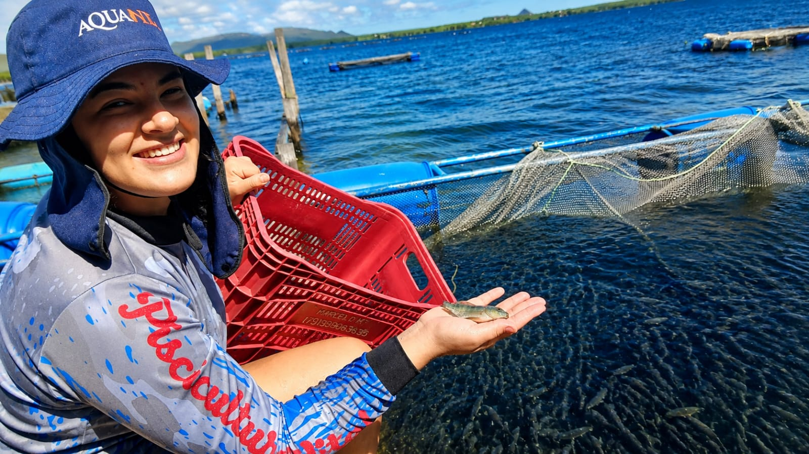

Piscicultura Vital
O que é o Juvenil?
O juvenil é a fase intermediária entre o alevino e a tilápia adulta. Nesta etapa o peixe já apresenta maior resistência,crescimento acelerado e melhor adaptação aos viveiros.
É um dos momentos mais importantes da produção,pois influencia diretamente o desempenho na fase de engorda.
Principais Características
Crescimento Rápido
Desenvolvimento acelerado quando manejado corretamente.
Maior Resistência
Mais resistente a mudanças ambientais que os alevinos.
Alta Conversão
Excelente aproveitamento da ração fornecida.
Alimentação
Durante a fase juvenil, recomenda-se utilizar rações balanceadas com alto teor proteico, distribuídas de 5 a 6 vezes ao dia, sempre observando o consumo dos peixes e a qualidade da água.